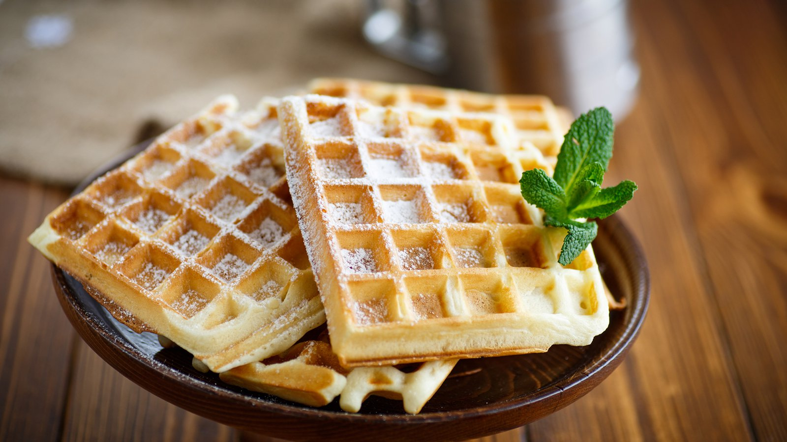

Waffles

The perfect recipe to always get the perfect waffles!
Ingredients
- 2 cups of al-purpose flour
- 1 teaspoon of salt
- 4 teaspoons of baking powder
- 2 tablespoons of white sugar
- 2 eggs
- 1.5 cups of warm milk
- third of a cup of butter, melted
- 1 teaspoon of vanilla extract
Steps
- Step 1: In a large bowl, mix together flour, salt, baking powder and sugar; set aside. Preheat waffle iron to desired temperature.
- Step 2: In a separate bowl, beat the eggs. Stir in the milk, butter and vanilla. Pour the milk mixture into the flour mixture; beat until blended.
- Step 3: Ladle the batter into a preheated waffle iron. Cook the waffles until golden and crisp. Serve immediately.